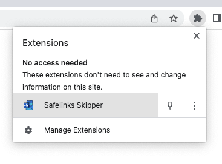
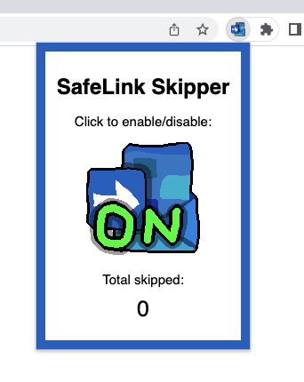

Any links you open that include ".safelinks.protection.outlook.com" will immediately be redirected to the actual website, meaning no request is ever sent to Microsoft. This stops Microsoft from seeing what websites you're visiting, and reduces the page loading time as it doesn't first go through their servers.
When in the Outlook web client, when you hover over a link in an email it will automatically be converted back into the actual website URL, so you never click on the Safe Links link in the first place!
You can enable or disable this extension at any time by pressing the "ON" or "OFF" icon in the extension menu. To get there, first open your extensions list by clicking on the puzzle icon.
Then select SafeLink Skipper from that list to bring up the extension's menu, and click on the big icon to enable or disable the extension
Safe browsing! - @dantechguy :)